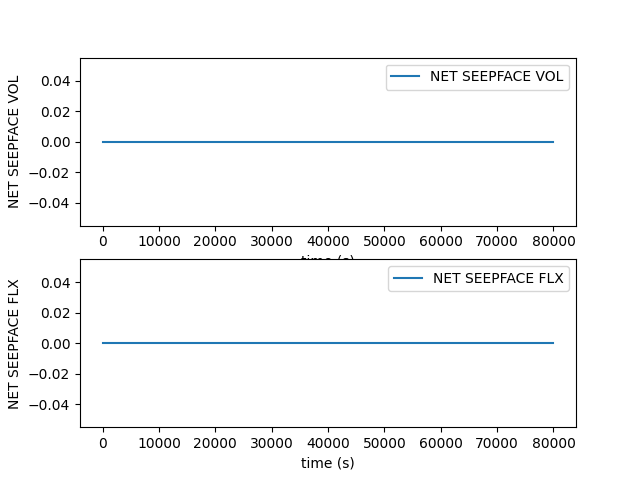
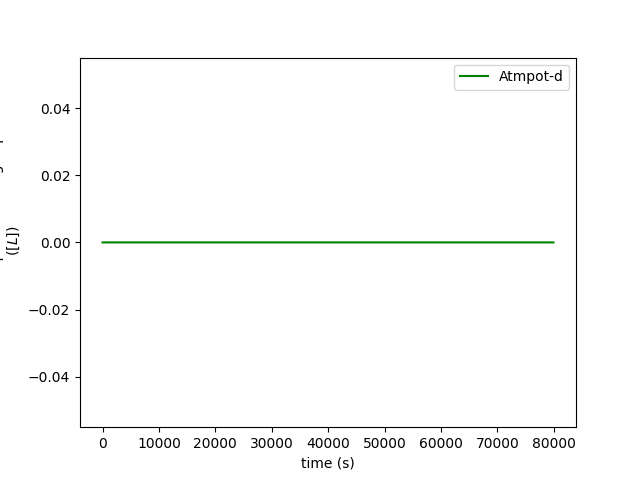
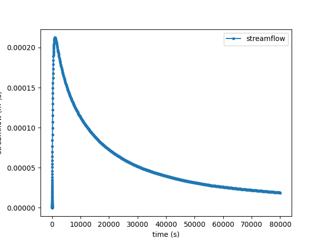
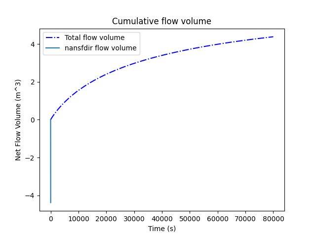
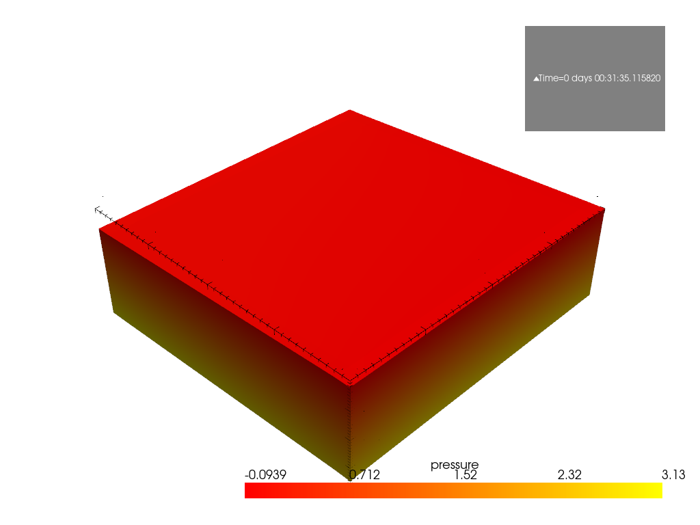

Note
Go to the end to download the full example code
Output plots#
Weill, S., et al. « Coupling Water Flow and Solute Transport into a Physically-Based Surface–Subsurface Hydrological Model ». Advances in Water Resources, vol. 34, no 1, janvier 2011, p. 128‑36. DOI.org (Crossref), https://doi.org/10.1016/j.advwatres.2010.10.001.
This example shows how to use pyCATHY object to plot the most common ouputs of the hydrological model.
Estimated time to run the notebook = 5min
Here we need to import cathy_tools class that control the CATHY core files preprocessing and processing We also import cathy_plots to render the results
from pyCATHY import cathy_tools
from pyCATHY.plotters import cathy_plots as cplt
if you add True to verbose, the processor log will be printed in the window shell
🏁 Initiate CATHY object
😟 src files not found
working directory
is:/home/runner/work/pycathy_wrapper/pycathy_wrapper/examples/SSHydro/weil_exemp
le_outputs_plot
📥 Fetch cathy src files
📥 Fetch cathy prepro src files
📥 Fetch cathy inputfiles
🍳 gfortran compilation
👟 Run preprocessor
🔄 update parm file
────────────────────────── ⚠ warning messages above ⚠ ──────────────────────────
['Adjusting TMAX with respect to time of interests requested\n']
────────────────────────────────────────────────────────────────────────────────
🔄 Update hap.in file
🔄 update dem_parameters file
🔄 update dem_parameters file
🛠 Recompile src files [6s]
🍳 gfortran compilation [12s]
b''
👟 Run processor
/home/runner/work/pycathy_wrapper/pycathy_wrapper/pyCATHY/importers/cathy_outputs.py:9: UserWarning: loadtxt: input contained no data: "/home/runner/work/pycathy_wrapper/pycathy_wrapper/examples/SSHydro/weil_exemple_outputs_plot/my_cathy_prj/output/grid3d"
nnod, nnod3, nel = np.loadtxt(grid3dfile, max_rows=1)
🔄 update parm file
🛠 Recompile src files [105s]
🍳 gfortran compilation [111s]
b''
👟 Run processor
simu.show(prop="hgsfdet")

simu.show(prop="dtcoupling", yprop="Atmpot-d")

/home/runner/work/pycathy_wrapper/pycathy_wrapper/pyCATHY/importers/cathy_outputs.py:303: UserWarning: Input line 3 contained no data and will not be counted towards `max_rows=964`. This differs from the behaviour in NumPy <=1.22 which counted lines rather than rows. If desired, the previous behaviour can be achieved by using `itertools.islice`.
Please see the 1.23 release notes for an example on how to do this. If you wish to ignore this warning, use `warnings.filterwarnings`. This warning is expected to be removed in the future and is given only once per `loadtxt` call.
dtcoupling = np.loadtxt(dtcoupling_file, skiprows=2, max_rows=2 + nstep)
simu.show(prop="hgraph")

simu.show(prop="cumflowvol")

To select another time step change the value in the function argument
cplt.show_vtk(
unit="pressure",
timeStep=1,
notebook=False,
path=simu.workdir + "/my_cathy_prj/vtk/",
)

plot pressure
- cplt.show_vtk(
unit=”saturation”, timeStep=1, notebook=False, path=simu.workdir + “/my_cathy_prj/vtk/”,
)
Total running time of the script: (1 minutes 52.594 seconds)